| |
Joker Day
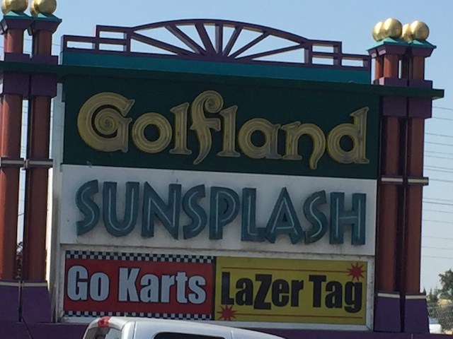
All right. Time for another update. We're back up in Northern California. This is actually our third time up here. We came in June to ride Joker, but it was closed. So I essentially promised to come back later in the summer to ride Joker, because I am NOT going to miss a new RMC in my own home state. And yes, I did manage to get on Joker today. And hey, we might as well stop on back at my new favorite water park in California (R.I.P Wild Rivers and F*CK YOU IRVINE COMP!!!), SunSplash.
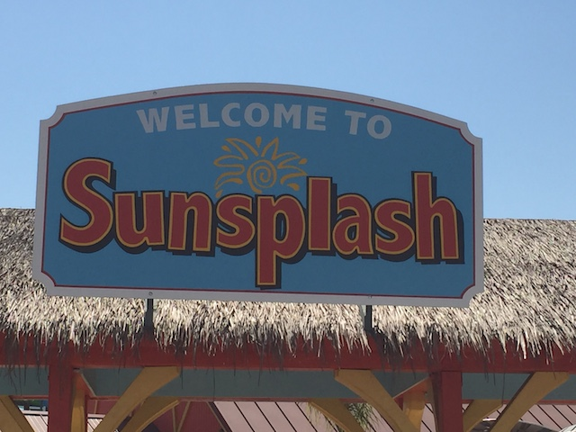
Seriously, give this place a visit if you're in NorCal. It really is a great water park. Plus, they have a Bazooka Bowls clone (Love that ride. Wish I got more than just one ride on it today. Stupid ride closing).
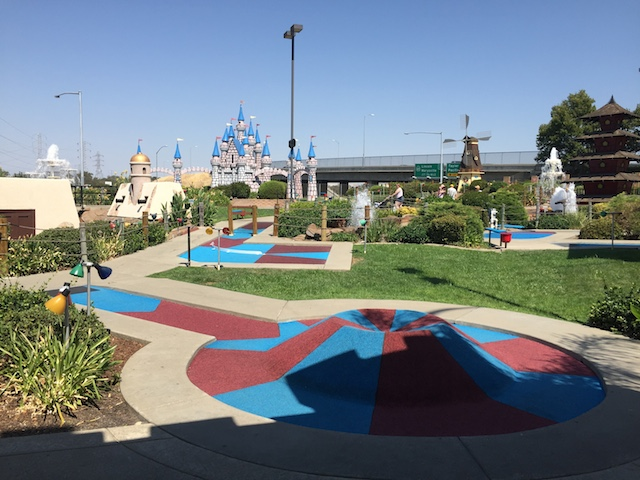
And you can also play mini golf if you want to as well (but that's not why we're here).
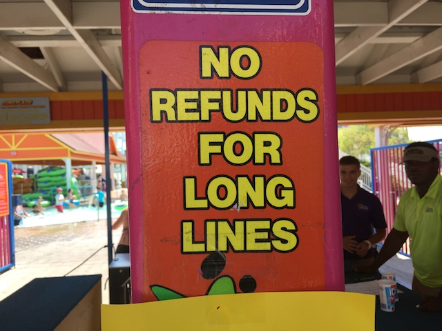
The most depressing thing about that sign is that there probably were idiots asking for a refund because of long lines (Seriously, if you have an entitled attitude like that, F*CK YOU!!!). =(
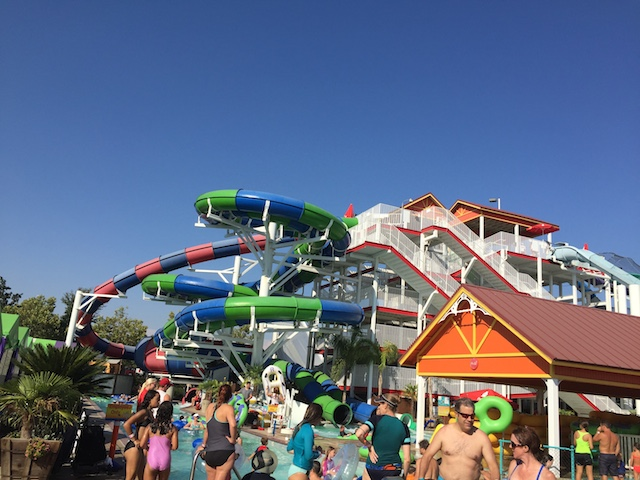
We did the one set of slides we didn't do last time. Dark Holes. I had low expectations for this ride, and was very pleasently surprised to find it to be a really fun ride with some strong laterals.
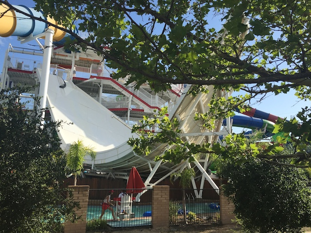
OK. We had the craziest ride on Stealth ever. We got a ton of speed, spun a ton, it was a ton of fun, went down the rest of the slide backwards, flipped into the pool, and bumped our heads on the bottom of the pool. Ouch. =( But honestly, aside from the hitting my head part, I loved that ride on Stealth. =)
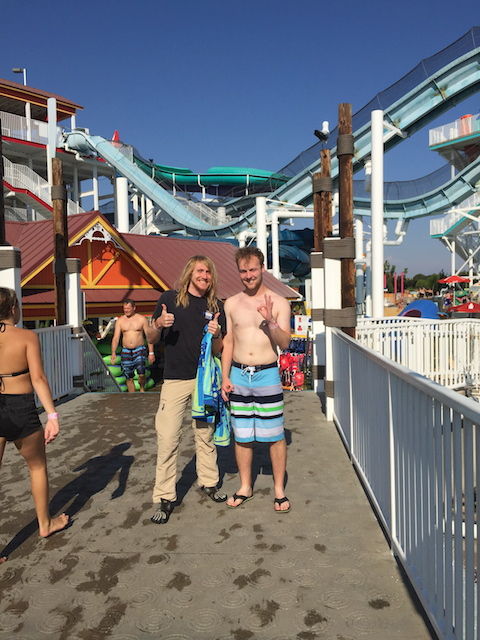
And yeah. Thank you SunSplash for yet another fun day. Love this place.
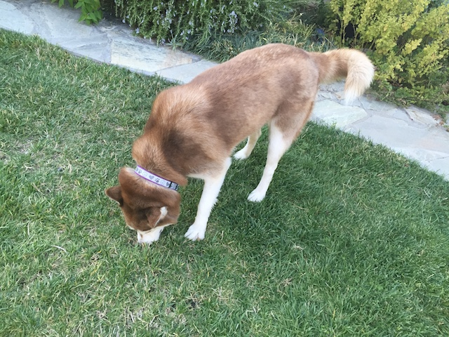
♫She said her name was Bella Belle. Soft and smooth like caramel.♫
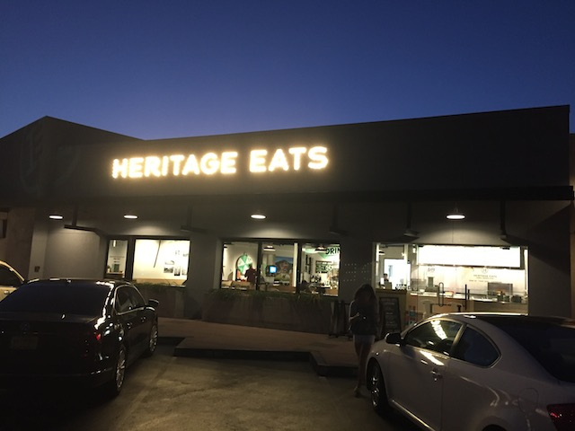
If you're ever in Napa, try this place out. I know it sounds like organic hippy bullsh*t, and it is to a certain extent, but this place is really good. Yeah, everything is locally grown, organic, and all that (which I have no problem with. I'm very pro-locally grown food). But seriously, the food here is really good. I loved it.
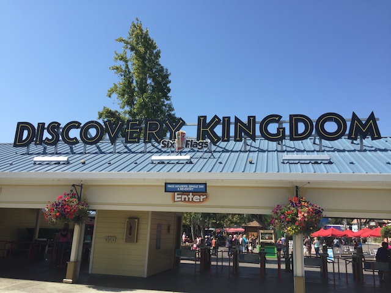
And of course, we're now at Six Flags Discovory Kingdom. And there's only one reason I came back for a third time this year.
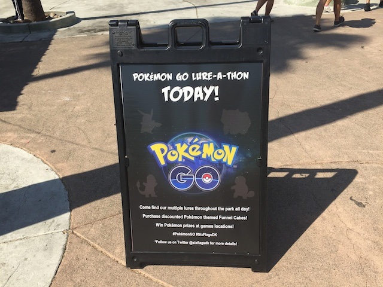
That's right! To play Pokemon Go! There's a lot of Pokemon and I gotta catch them all!! (Seriously, I'm like one of the rare people who doesn't give a damn about Pokemon Go. Sorry friends who like the game ;) ).
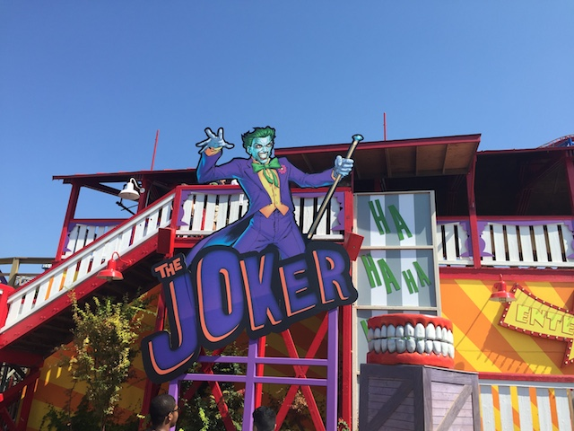
But seriously. I'm here to FINALLY get on Joker.
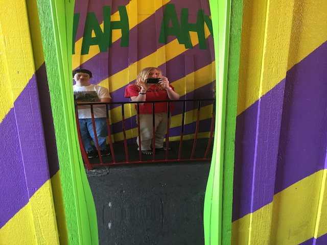
Love the funhouse mirrors in the line.
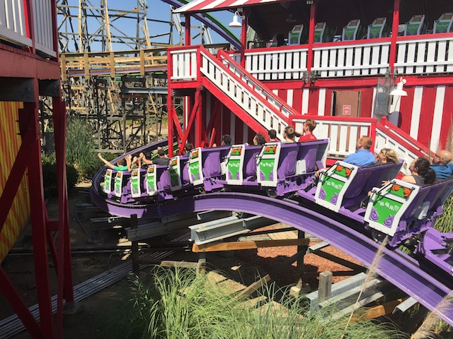
Love how there's airtime even on the prelifts of RMCs. =)
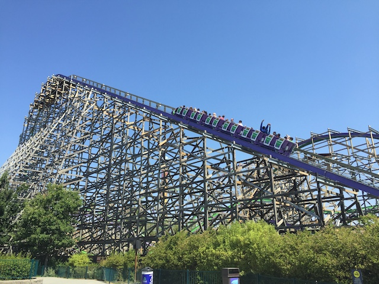
But yeah. I've heard a lot of mixed things about Joker and was happy to finally see how it was for myself.
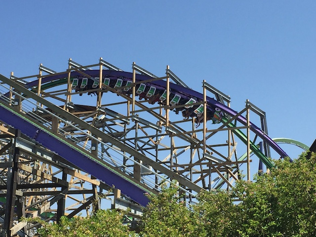
Joker may not be as good as the other RMCs (Twisted Collosus is better), but it's still a great ride. Got some nice speed, some really good airtime, good pacing, and even some fun laterals. Just a really great ride overall.
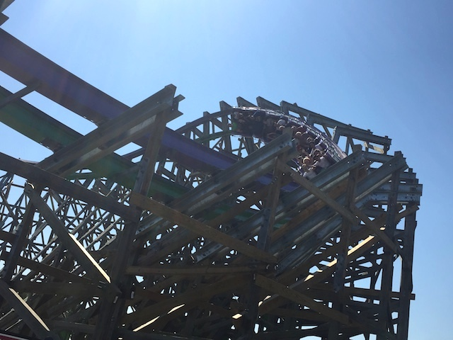
I was relieved to really like Joker after hearing that it was super slow and sluggish a couple weeks ago from Cody. I was told that it was running really sh*ttily back then thanks to bad wheels from Alex, who confirmed that it was bad a couple weeks ago, but running at its full potential today. Something tells me that I had bad wheels on my one ride on New Texas Giant, which still remains my least favorite RMC despite all the praise it gets. I really gotta reride that (I just don't want to have to go back to SFOT).
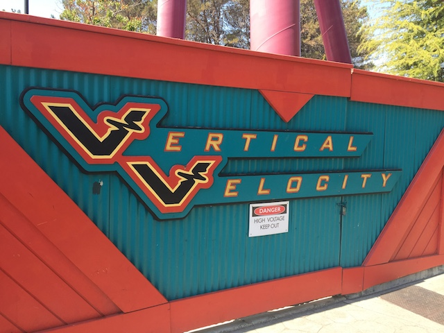
Oh hey. V2 is also open today. YAY!!!
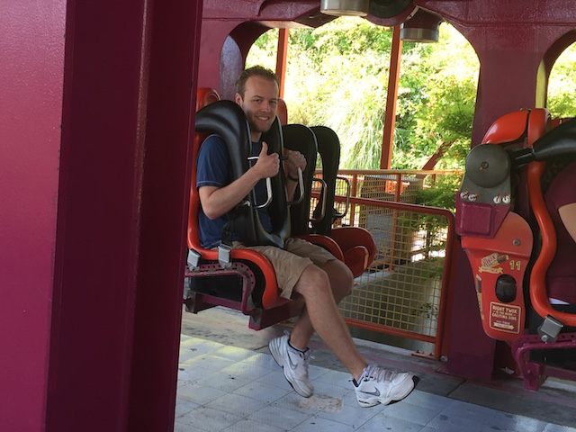
I know I was worried about V2 possibly becoming SBNO last time after having it be closed for so long. So seeing it open today really made me breathe a sigh of relief and put a smile on my face.
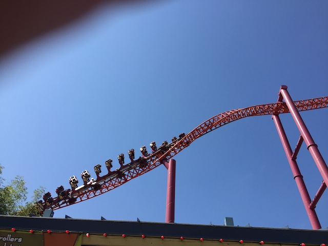
I still really like this ride. I just love that screwed up inline twist. Makes me happy that SFDK was forced to redesign the ride for their stupid height restriction.
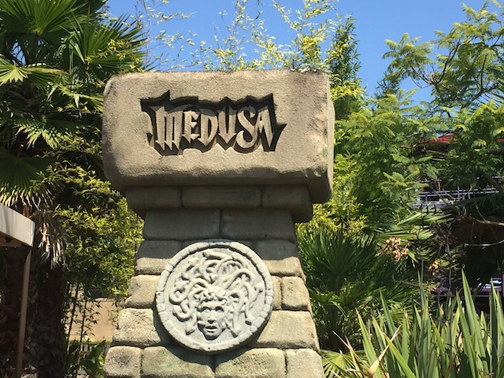
Medusa Time.
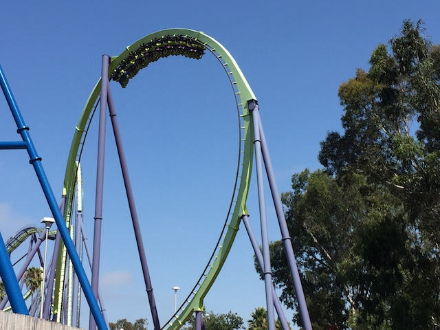
HOLY CRAP!!! Medusa was running ROUGH today. I normally will roll my eyes at people who will bitch about B&Ms (excluding Iron Wolf and the Vortexes) being rough (Seriously, Scream and Incredible Hulk are NOT rough rides). But there's no denying it. This ride on Medusa was ROUGH. Now it wasn't painful. I still enjoyed it. But it was RATTLING today, and it was rattling A LOT!!!
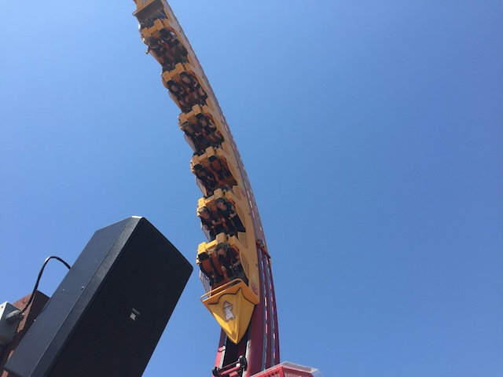
Hey look. I finally rode one of those stupid Larson Super Loops.
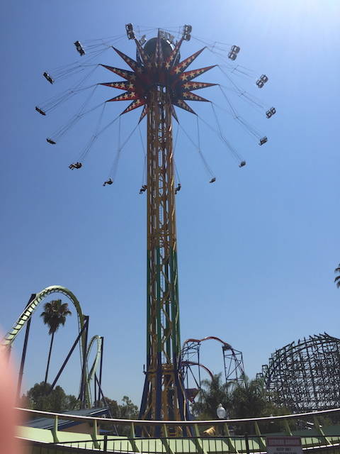
Actually bothered to ride their puny little Starflyer (It barely qualifies. Really tempted to call them Elevated Chairswings). All I could think on the ride was "These shots of Medusa and Joker are AMAZING!!! Please stop the ride, let me pull out my camera, and get these shots".
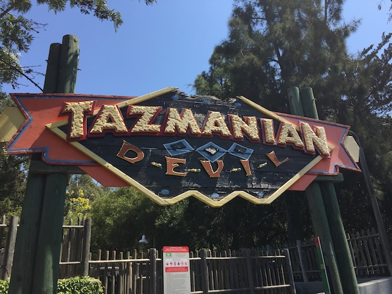
Still a great frisbee. Love the frisbees that both spin a ton and swing a ton as well.
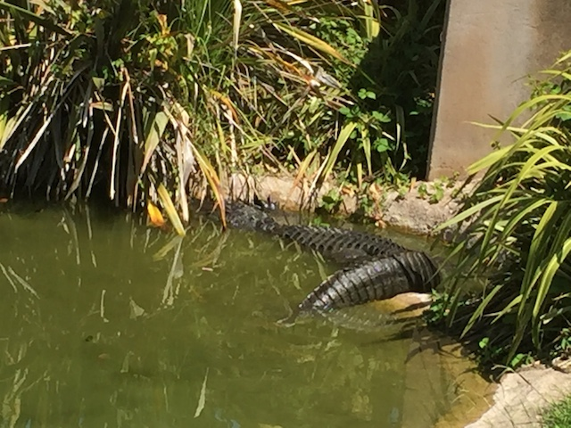
"The treatment at Six Flags sucks. I hate it here! I want to go back to Disney! I got to eat a child over there!"
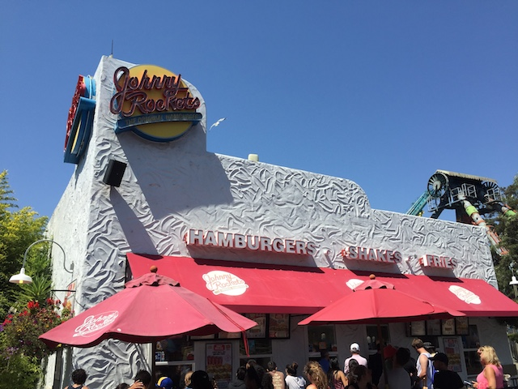
All right. We just decided to eat at the Johnny Rockets for lunch here.
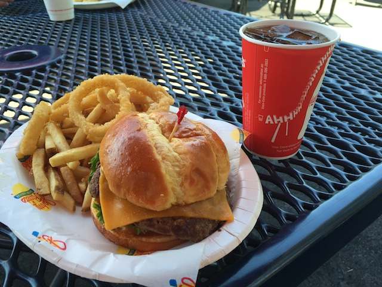
All right. Incrediblecoasters Rant Time. Because I just HAVE to complain about this. The operations in their food department are ABYSMAL!!! The operations overall today have been mediocre (particuarly on Joker. Please run two trains, and instead of cracking jokes, check the restraints faster. That's my only complaint with Joker). But when it comes to the food department, they EASILY take the cake. The food department was being run very much like a place like La Ronde. Seriously, the way Johnny Rockets was being run, it felt like I was back at a park like La Ronde. First off, it took a longass time to get the food. Like 30 minutes. Then once I got the food, I ate. And of course, I want ketchup for my fries. I circle around Johnny Rockets, looking for the ketchup packets, and I can't find them anywhere. Seriously, Six Flags, fix this please. So I go back to the counter to ask for some ketchup. And I'm waiting for over 5 minutes, possibly 10, for this one guy to get his food. OMG!!! This is taking FOREVER!!! And it wasn't just me saying that. The woman next in line turned around to her husband and said something like "OMG!!! I've never waited this long to get f*cking lunch. This snot-nosed little teenage brat needs to be fired!", and really seemed angry that I went to go ask for ketchup. Honestly, even though that woman really seemed unlikeable, had this bad stuck up pompeous attitude, and seems like the kind of guest who would ask for outrageous requests, I kind of agreed with her. Those operations for lunch were ATTROCIOUS!!! And while I do know that Johnny Rockets is understaffed, and they needed more people working (I used to work in a Six Flags park. I know what it's like). So I understand some sort of delay. But sometimes, when its peak time, and there's a long line, you have to haul your ass and really work. Or at least I did that whenever there was a line. Wish all my former co-workers did that as well. But this person definetly was just lollygagging. Yes, she was understaffed, not denying that. But she did not give a f*ck. That was perfectly clear. OK, you don't have to give a f*ck, but you have to do your job at a reasonable speed that keeps the line moving. Plus, when I eventually did ask for ketchup, she seemed dumbfounded that I'd ask for that, acting like I just asked for cavier (which BTW is disgusting. I have no idea why people eat that, let alone pay the price people usually do for that). Seriously, that attitude is not appropriate. You don't have to smile (I will defend not smiling to the end of the earth. Seriously, demanding that people smile is stupid) and act like you're super happy to be there. I get that it's an ass job, and that you don't want to be there. I never understood people that get upset at the notion that people working at sh*tty minimum wage jobs don't want to be there. I don't need you to be a plastic robot forcing a smile and acting like you're at Disneyland. But you DO have to be a little polite. You CAN NOT roll your eyes at people, or showcase disgust with people (believe me, there were plenty of guests I wanted to roll my eyes at and call morons. But with the exception of the guests that tried to win a Darwin Award, I never insulted anyone or showcased resentment towards guests). Just get me the god damn ketchup and don't act like it's an outrageous request! And please just put your ketchup on the side like every other resteraunt. Then this could've just been avoided. So yeah. Six Flags, please put ketchup on the sides, hire more people to work in your resteraunts, keep the operations good, and while they don't have to smile, they do have to not have a rude stuck up attitude. Ugh. It's not just the price that drives me to constantly eat outside the park. Part of it is because of operations like this as well.
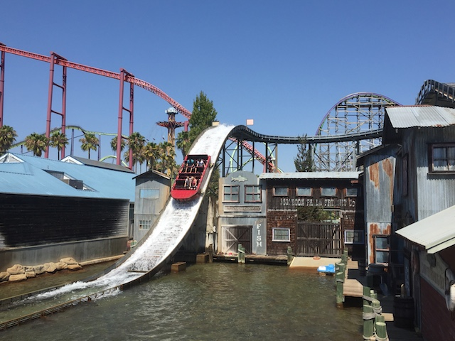
Hey. Might as well take a ride on their Shoot the Chutes ride. It's hot outside, and it'll cool us off.
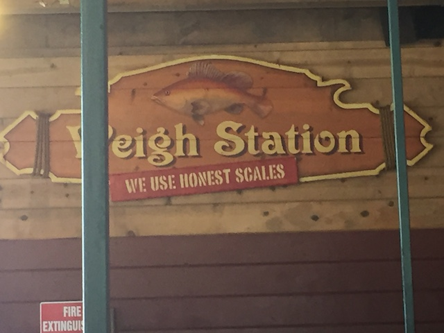
"If any scale tells me I'm fat, then it's a dishonest scale. Man, honest scales are just so hard to find nowadays."
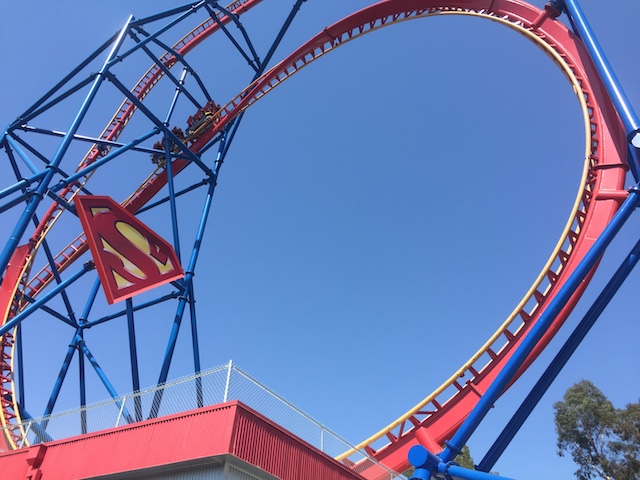
Gotta ride Superman: Ultimate Flight while we're here.
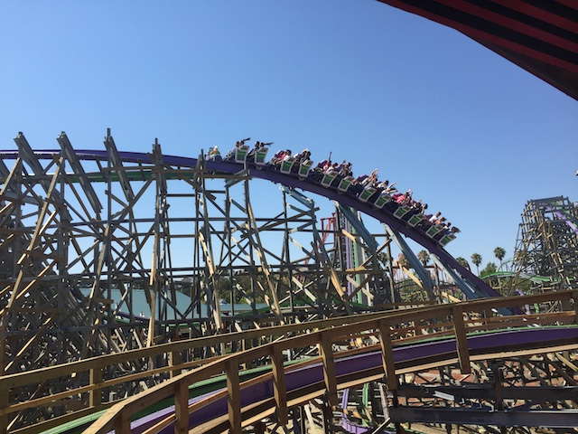
And of course, we gotta get some more rides on Joker while we're here.
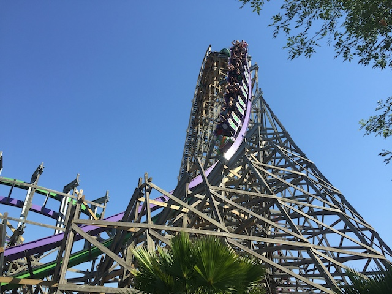
It may not be the best RMC, and both Twisted Collosus and Iron Rattler are better, but Joker really is a great ride. Seriously, that first drop has some really good ejector air and is almost reminiscint of the first drop on Expedition Ge Force and Xcelerator.
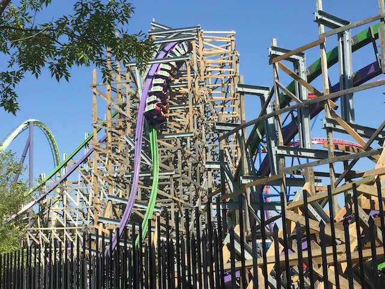
Easily the best coaster in Northern California.
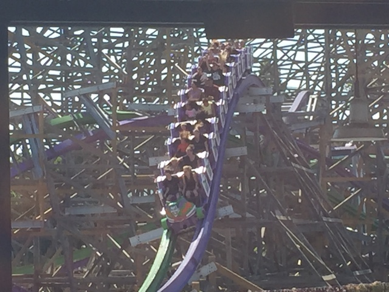
And that was another fun visit to Six Flags Discovory Kingdom. I'm 99% sure that this'll be my last visit to the park this year, but I had a lot of fun up North again. Sun Splash is great as always, and while Six Flags Discovory Kingdom does need to work on its operations, Joker is a great RMC that exceeded my expectations and people in California should definetly try and ride it sometime. =)
Home
|